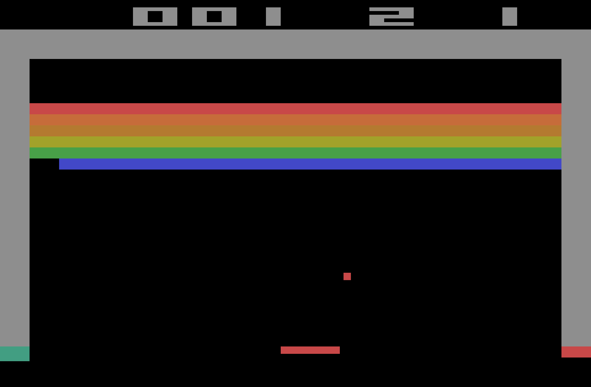

Om spelet
Breakout är ett gammalt spel som först gjordes av Atari i Japan 1976. Det släpptes senare till hemspels-konsolen Atari 2600 1978, och såg då ut såhär:
Javascript canvas
Tekniken jag använder till mitt spels grafik är Canvas som är ett sätt att rita i HTML med Javascript som backend. Med canvas kan man enkelt rita olika former, och det är även enkelt att få det att se ut som att former rör sig. Det gör du enkelt genom att rita ut en form, sudda ut den formen och sedan direkt rita ut en ny form en liten bit ifrån. När detta görs snabbt ser det ut som att former rör sig på skärmen.